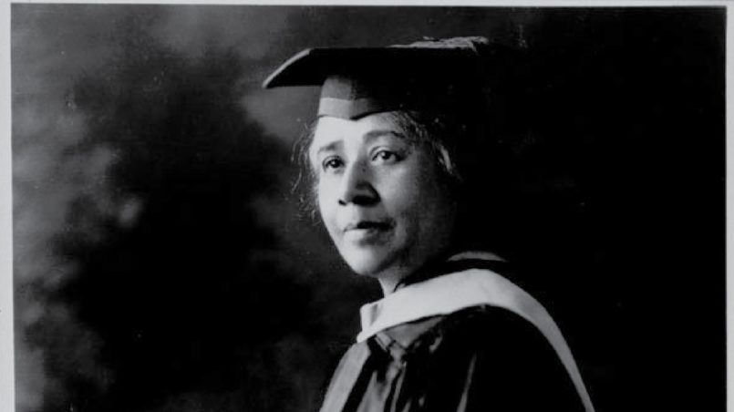

Anna Julia Haywood Cooper (August 10, 1858 – February 27, 1964) was an American author, educator, sociologist, speaker, Black liberation activist, and one of the most prominent African-American scholars in United States history.
Transcribed: October 2017 by Howard University
